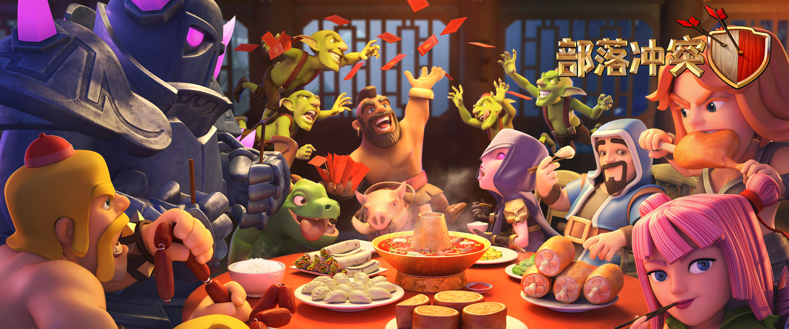
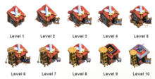
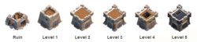

部落冲突（英文简称COC)（部落战争）是为芬兰游戏公司Supercell oy所推出的策略类的游戏，现已被腾讯收购大量股份。于2012年8月2日在苹果应用商店发布。该游戏以策略战争为主题，通过经营自己的村庄，玩家可逐渐强大兵力，进而与成千上万的玩家进行战斗。村庄到达一定等级后，还可与其他村庄结成部落，进行部落间的战斗。其内容兼具攻、守城及养成元素，玩家一开始时只有两个建筑工人小屋，及各一座等级1的大本营、金矿、圣水收集器、兵营，各750点的圣水和黄金。第一次进入游戏会进入引导模式让玩家了解此游戏的建造、升级、提速及解锁的方式，此游戏重要靠恒心，并不能一朝一夕养成大神（当然充钱除外）。随着游戏的进行，到了后期重心将会由单人模式移至多人模式。 2013年9月30日该游戏的安卓版在芬兰和加拿大率先推出。2013年10月7日Supercell在世界其他国家的Google Play市场推出了该游戏。
野蛮人（Barbarian，别名：小黄人、胡子）
等级：1-7
擅长类型：全适用
攻击偏好：任何
伤害类型：单个目标
攻击目标：地面
所需空间：1
训练时间：5秒
移动速度：16
综合评价：这些无畏的勇士长着引人注目的胡子，他们依靠壮硕的肌肉在敌人的村庄为你出生入死！弱点：各项指标皆为中等，如果一群攻击非常容易被高等级的迫击炮虐爆。
弓箭手（Archer，别名：MM）
擅长类型：全适用(亦就是无特长)
攻击偏好：任何
攻击类型：单个目标
等级：1-7级
攻击范围：地面和空中
所需空间：1
训练时间：6秒
移动速度：24
综合评价：血量很低，但是与野蛮人相比攻击范围更远，几乎是出兵必带的兵种。偷本专用。
弱点：由于个体攻击效果不高，群体攻击容易被迫击炮、法师塔完爆，进攻时需要利用其特别破阵才能发挥最大作用。
巨人（Giant，别名胖子，6级开始变成黑色被称为黑胖）
擅长类型：防御塔
攻击类型：单一目标
等级：1-8级
攻击偏好：防御设施
攻击范围：地面
所需空间：5
训练时间:30秒
移动速度：12
综合评价：皮粗肉厚的肉盾兵种!虽然行动缓慢但是他会针对防御型建筑进行疯狂砸击，配合天使可以进行火车一样强大的破坏力，俗称“天胖流”。
弱点：移动速度的慢导致了可能被多个高攻速防御塔的多重攻击，需要巧妙运用出兵位置。若安排在防空火箭旁攻击，若没有空兵是鸡肋，但血量很高，能够耗时间让巨人被防御塔攻击。同时也容易会被弹簧陷阱弹飞。
雷电法术（Lightning Spell）
制作时间：6分钟
所需空间：2
半径：2
随机半径：3.5
伤害类型：区域溅射六次
攻击间隔：0.4s
所需法术工厂等级：1
疗伤法术（Healing Spell）
制作时间：6分钟
所需空间：2
半径：5
随机半径：2
治疗次数：40
治疗间隔：0.3s
所需法术工厂等级：2
狂暴法术（Rage Spell）
制作时间：6分钟
所需空间：2
半径：5
随机半径：4
脉动次数：60
脉动间隔：0.3s
脉动时间：1s
所需法术工厂等级：3
兵营 (Army Camp，兵所):所有士兵都在这里休息。升级可获得更高的人口限制，并提升建筑耐久度。占地面积：5×5
训练营 (Barracks)在这里可以用圣水训练自己的部队。升级后可召唤更高等级的兵种，并提升建筑耐久度。高等级的兵种会有更强的攻击力、更高的血量、更快的速度。
部落城堡 (Clan Castle)援兵警戒范围：12格同一部落成员可以相互捐兵，部落兵全部驻守在部落城堡内。一旦敌军出城堡境界范围内，部落兵就会出动防御。在进攻的时候也可以使用部落兵。在部落城堡4级以后可以捐助法术，其中7级可以捐两个单位的法术。升级可获得更高的部落兵人口上限，并提升建筑耐久度。